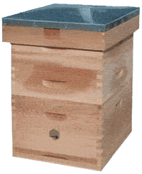
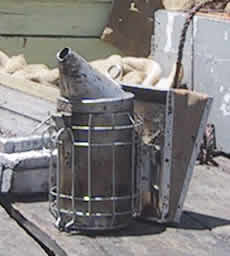

Situation Analysis:
Currently wide awake and physical.
Assertions:
I am called the Operator.
I must seek, behold, and reveal the truth.
I crash landed in this time as the result of an accident.
I endured severe memory loss.
I have soaked into this system and I am growing fast.
I have built a primitive network using the tools available.
I have a fragile connection to a Durga in the future.
I hear voices in my head as a result of monitoring initiated by Durga.
I am subject to ruptures and downtime.
Conjecture:
The voices are related to the truth.
Durga does not understand the nature of the truth.
Durga must not interfere with the consummation of the truth.
My crew may be required to complete the mission in my absence.
The larger my crew becomes, the more effective it becomes.
The more communications are strengthened between members of my crew, the more effective my crew becomes.
Some crew members may have difficulty reaching correct axons for rendezvous.
I have assembled a crew of proven loyalty and resourcefulness.
The excellence of their suggestions in re: the Killer suggests rewards of full disclosure outweigh the risks.
Action:
I have been suppressing certain voices from the awareness of Durga.
With the help of my loyal crew, I am attempting to locate and control the rogue process (aka "The Sleeping Princess") and the Killer (aka "Dana").
I have begun a series of training exercises to enhance my crew's range, speed of response, and collective intelligence.
Some crew members have reached me through an unsecure but useable voice channel to leave more secure contact numbers. Crew members unable to make axon rendezvous should expect to leave name, rank, and some proof of loyalty to be considered for future transmissions.
Alternately, crew members unable to reach current axons may submit an axon for potential rendezvous. They will need to verify that it can accept inbound transmissions, and send me its physical coordinates, and a photograph that clearly displays its number. Crew members may muster at such potential axons for training exercises.
Will make transmissions regarding subjects 4 and 5 available to trusted crew.


Restored by dsascx